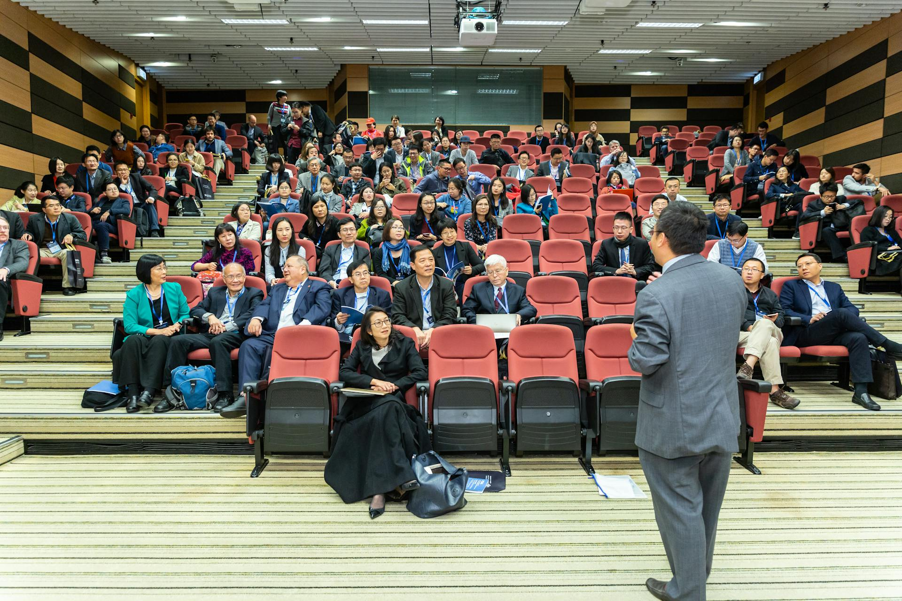

Reto-Eco
Cuatro días de charlas y talleres de especialistas en el sector sobre nuevos horizontes en la economía circular, para profesionales e interesados en este campo.
AGOSTO 6 - 9
"una posibilidad de aprender de la mano de profesionales que nos acercan de una forma integral a soñar con mejores futuros"